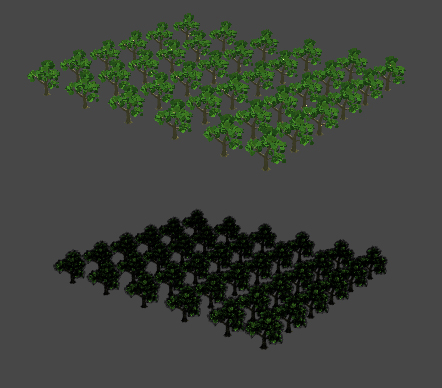
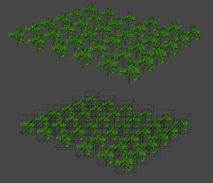
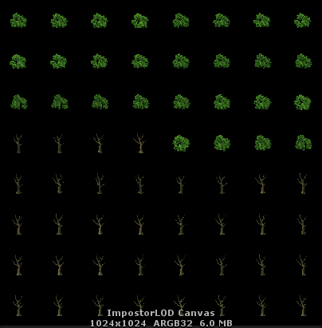

Impostor LOD
2018-6-1
植被在渲染的时候一直有一个痛点，就是为了表现出植物的轮廓和层次，需要非常多的三角面堆叠起来，渲染这些三角面本身就需要消耗大量的资源。而植物常用的 AlphaTest 材质又破坏 TBDR 的 HSR（Hidden surface removal）优化。所以遇到大量的植物渲染时，往往会成为一个瓶颈。
这里尝试使用 Impostor 来解决这个问题。下面是效果图：
正常渲染树木。5w三角面。
正常渲染树木。144三角面。
可以看到经过 ImpostorLOD 处理后，效果基本能够得到保证，需要渲染的三角面数量急剧减少，并且原本层层叠加的 AlphaTest 开销也减少到了最小。
对于上图中的是静帧自然没什么问题，但是游戏中的视角自由度是非常高的，所以这里增加了一个动态渲染 Impostor 的过程。将由于角度变换需要进行重绘的任务加入到一个队列里，每一帧从队列里取出几条任务执行重绘，注意这里是只取几条而不是全部，所以会造成一定的延时，这种穿帮是会被玩家发觉的。所以需要配合一个合适的 LOD 距离以及场景中的其它物件，来减小被玩家察觉的可能。

这张图是渲染 Impostor 的 Canvas，所有 Impostor 都会被渲染到 Canvas 上，如果 Canvas 空间不够再开辟新的 Canvas。这样做的另一个好处是由于 Impostor 的三角面数非常少，所以只要是使用了同一个 Canvas 的 Impostor 都会被动态合并成一个 DrawCall。
基本原理和实现方法就是这些了，总的来说还是较简单的，只是实现细节需要反复推敲，整合到项目中的话更是需要不断磨练了。